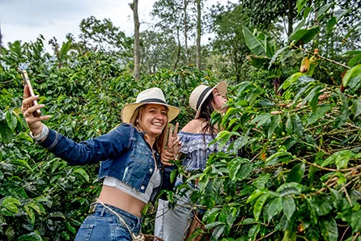

Salento · Colombia
Colombia produceert een van de beste koffies ter wereld, en de regio rond Salento is het hart van de Zona Cafetera — het koffiegebied. Een bezoek aan een werkende koffie-finca onthult het volledige verhaal achter je kopje: van de bessen aan de struik tot de gebrande boon.
Finca Las Acacías biedt een rondleiding van ±2 uur waarbij je zelf bessen plukt, het fermentatieproces ziet, de droging, de ontdopping en het roosteren. Afgesloten met een koffieproeverij om de kwaliteitsverschillen te proeven. Een onmisbare ervaring als je begrijpt waarom Colombiaanse koffie zo goed smaakt.

Colombia is the third-largest coffee exporter in the world and the only big producer that grows arabica beans exclusively. The coffee bean was brought to Colombia from Venezuela in the early 18th century by Jesuit priests. It was first cultivated in the area that is now Norte de Santander before spreading throughout the country. Local conditions proved ideal for growing arabica coffee. Colombia’s location near the equator means that coffee can be grown high in the mountains, where the beans mature more slowly.
Of the coffee farm visits which you can make from Salento, the tours of Finca Don Eduardo are the easiest, the most informative and the closest to town. They also have the advantage of being conducted in English. Tim from The Plantation House, who owns the farm, gives a comprehensive explanation of the different types of coffee, how they’re grown and how they’re processed, and is happy to answer questions.
• Boek via het hotel de avond tevoren — ze kennen de beste lokale fincas
• De meeste tours zijn in het Spaans maar gidsen spreken vaak ook Engels
• Breng een waterfles mee — het werken op de finca kan warm zijn
• Je kan ook zelfgeplukte bonen kopen als souvenir
• Andere populaire finca: Don Elías (ook in Salento, iets verder buiten het centrum)